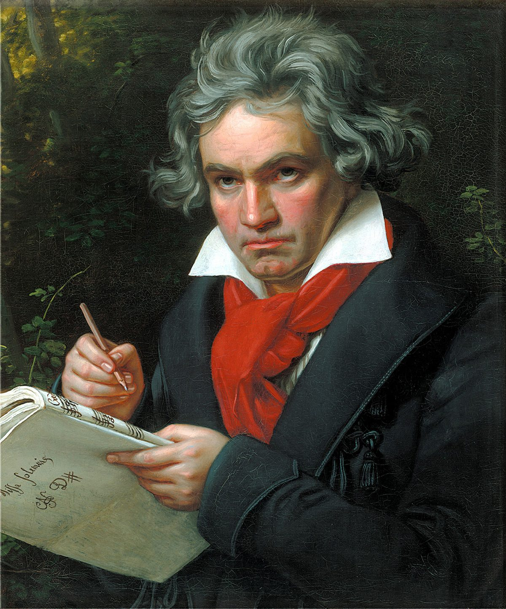

Europa
21 april 2025
Door Erwin Van den Brink
Op 9 mei, Europadag, organiseerde het Stefan Zweig Genootschap de jaarlijkse
Stefan Zweig-lezing. Dit jaar stond het thema Europa centraal — hoe Zweigs
droom van een verenigd continent resoneert met de uitdagingen van vandaag.
Lees verder
Joseph Roth
13 oktober 2020
Door Dirk Jansen

De vriendschap tussen Joseph Roth en Stefan Zweig was een van de meest
bijzondere literaire relaties van de twintigste eeuw. Twee schrijvers,
beiden Joods, beiden Oostenrijks, beiden in ballingschap — maar in
temperament en levensstijl elkaars tegenpolen.
Lees verder
Vertaling
5 september 2020
Een Nederlandse vertaling van Zweigs novelle Die unsichtbare Sammlung —
het verhaal van een blinde verzamelaar die niet weet dat zijn kostbare
prenten zijn verkocht. Een ontroerend verhaal over kunst, verlies en illusie.
Lees verder
Rilke
9 juli 2020
Door Piet Wackie Eysten

De relatie tussen Rainer Maria Rilke en Stefan Zweig was er een van
wederzijds respect en bewondering. Zweig beschouwde Rilke als de
grootste dichter van zijn generatie en schreef na diens dood een
ontroerend herdenkingsessay.
Lees verder
Beethoven
2020

Zweig was een hartstochtelijk verzamelaar van manuscripten en autografen.
Zijn collectie bevatte originele handschriften van Beethoven, waarover
hij met grote bewogenheid schreef.
Lees verder
Masereel
2020
De Belgische houtsnijder Frans Masereel en Stefan Zweig deelden een
pacifistisch ideaal. Zweig schreef het voorwoord bij Masereels
meesterwerk en beschouwde hem als een van de grootste grafische
kunstenaars van zijn tijd.
Lees verder